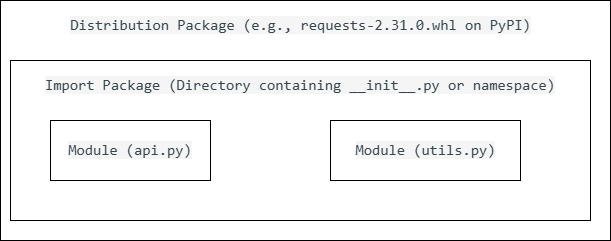

Python Packages & Libraries
Modules vs. Packages vs. Distributions
- Each term refers to a distinct structural boundary in the ecosystem.

Module
- A module is the fundamental unit of code organization in Python.
- A single
.pyfile (or a compiled C/Rust extension module) containing executable statements, function definitions, classes, and variable bindings. - Example:
math.py,my_app/utils.py. - Import Syntax:
import utilsorfrom my_app import utils.
Package
- A package is a specialized module that acts as a container for other modules or nested packages.
- Physically, it is a directory on disk containing source files.
- Regular Package: A directory containing an explicit
__init__.pyfile. - Namespace Package (PEP 420): A directory without an
__init__.pyfile, allowing a single logical package to be split across multiple separate directories or distribution archives onsys.path. - Example: A directory named
my_package/containing an__init__.pyand child modules.
Distribution (or "Distribution Package")
- A distribution is a versioned archive file (
.whlor.tar.gz) published to a package index like PyPI or installed via package managers likepiporuv. - A single distribution can contain one or more importable packages, single modules, metadata files, and executable binary scripts.
- Example:
pydantic-2.6.0-py3-none-any.whl. - Distinction Rule: We install distributions via package managers (
pip install pydantic), but we import packages or modules in Python code (import pydantic).
Package Execution Lifecycle
The Role of __init__.py
- When Python imports a package directory for the first time, it automatically executes the
__init__.pyfile inside that directory before making any submodules available. -
Recommended Functions of
__init__.py:- Package Namespace Initialization: Run one-time setup required for the package to operate.
- Explicit Public Interface (
__all__): Re-export symbols from internal submodules to provide a clean top-level API surface for library consumers. - This pattern allows consumers to invoke
from my_package import APIClientdirectly, rather than exposing deep internal directory structures likefrom my_package.core.client import APIClient.
-
For enterprise codebases, adding
import-linterallows defining architectural rules inpyproject.tomlto prevent consumers or higher-level modules from importing internal packages.
The Role of __main__.py and Package Execution
- The
__main__.pyfile defines the entry point when a package directory is executed directly from the terminal using Python's-m(module execution) flag. python3 -m my_package- When this command is invoked:
- Python locates
my_packageonsys.path. - Python executes
my_package/__init__.py. - Python executes
my_package/__main__.pywith the special context variable__name__ == "__main__".
- Python locates
- This mechanism allows a package to function both as an importable library and as a runnable CLI application.
$PYTHONPATH
- It is an environment variable used to inject additional search directory paths into
sys.pathduring interpreter initialization. - Directories listed in
PYTHONPATHare inserted intosys.pathimmediately after the script's invocation directory, but before standard library andsite-packageslocations. - While useful for quick local debugging, relying on
PYTHONPATHin production or application code is considered anti-pattern behavior. - Setting up editable installs (
pip install -e .oruv pip install -e .) using a standardpyproject.tomllayout is the recommended rule to follow for resolving local imports deterministically across team environments.
Distribution Formats

- Python code is distributed in two primary artifact formats.
Source Distributions (sdist)
- An
sdistis an uncompiled gzipped tar archive (.tar.gz) containing raw Python source code, non-code assets, and build instructions. - File Naming Convention:
package-version.tar.gz(e.g.,requests-2.31.0.tar.gz). - Characteristics:
- Contains build configuration files (e.g.,
pyproject.toml,setup.py). - Platform-agnostic (contains no pre-compiled binaries).
- When installing an
sdist, the target system must execute the build backend locally to compile C/Rust code or assemble the package before installation can complete.
- Contains build configuration files (e.g.,
Built Distributions: Wheels (.whl)
- A Wheel is a ready-to-install zip archive (
.whl) structured to be unpacked directly into a targetsite-packagesdirectory without executing build code. - Defined under PEP 427, wheels eliminate code execution during the installation phase.
- File Naming Convention (PEP 425 Tags):
{distribution}-{version}-{python_tag}-{abi_tag}-{platform_tag}.whl - For production application deployments, prioritizing wheel installations is the recommended rule to follow.
-
This guarantees fast, deterministic deployments and eliminates the requirement for heavy C/Rust toolchains inside production runtime containers.
Key Differences Matrix
| Attribute | Source Distribution (sdist) |
Built Distribution (wheel) |
|---|---|---|
| File Extension | .tar.gz |
.whl |
| Installation Speed | Slow (requires local build processing) | Fast (direct copy/extraction operation) |
| Compiler Requirement | Target machine requires C/Rust compilers for native code | Pre-compiled; no local build tools required |
| Security Profile | Executes setup hooks or build backends during install | Pure static extraction; no arbitrary code execution |
| Portability | Universal source archive | Can be universal (py3-none-any) or platform-specific |
Pure Python vs. Compiled/Native C/Rust Extension Packages
- Python libraries fall into two architecture categories based on whether their execution requires native compilation.
Pure Python Packages
- Libraries composed entirely of standard Python modules without native C/C++/Rust dependencies.
- Example:
requests,urllib3,jinja2. - Build Characteristics: A single build produces one
sdistand one universal wheel taggedpy3-none-any.whl. - Deployment Advantages: Completely portable across operating systems and architecture targets.
Compiled/Native Extension Packages
- Libraries that offload performance-critical tasks to compiled C/C++ libraries or Rust code via Python's C-API or Foreign Function Interfaces.
- Example:
numpy,cryptography,pydantic-core,polars. - Build Characteristics: Must be compiled separately for every targeted operating system, CPU architecture, and CPython ABI version combination.
- The
cibuildwheelWorkflow: Maintainers of compiled packages use tools likecibuildwheelinside CI/CD matrix builds to generate dozens of platform-specific wheel files for distribution on PyPI.
Package Distribution
- To share a library or tool with the world, it must be compiled into distribution artifacts (
sdistand.whl) and uploaded to a package repository like PyPI (Python Package Index) or TestPyPI.
Configure Package Metadata
- Organize source code inside a src/ directory layout and ensure metadata fields are populated in
pyproject.toml.
Build Distribution Artifacts
- Run the build frontend tool (
uv buildor Python's standard build tool) from the root directory.
Publish to PyPI / TestPyPI
- Authenticate with PyPI using API tokens or Trusted Publishers (OIDC).
twineis the standard tool used to securely upload artifacts.